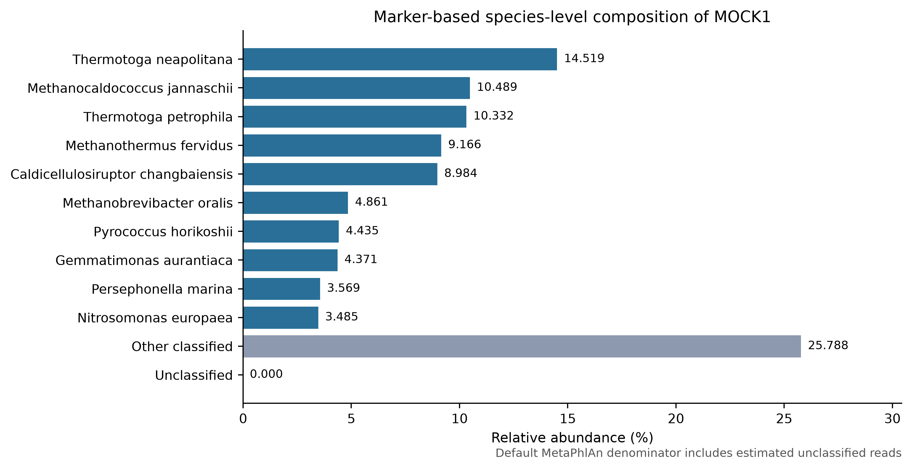
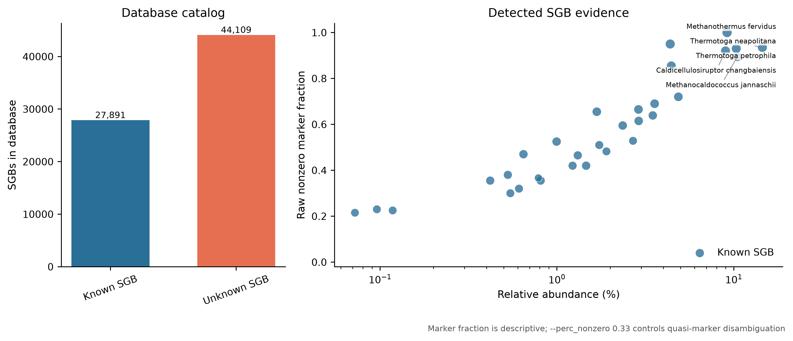
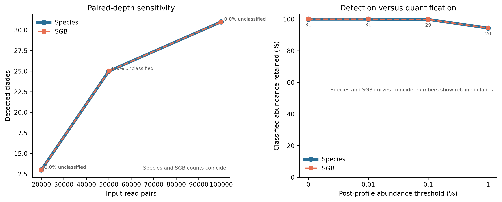

options(timeout = 600)
base_url <- "https://raw.githubusercontent.com/petemeng/metagenomics-best-practices/e219a2cd01609cc208a89e291cbd363ed7f2fbd8/"
files <- read.delim(paste0(base_url, "examples/15/files.tsv"))
for (i in seq_len(nrow(files))) {
path <- files$path[i]
dir.create(dirname(path), recursive = TRUE, showWarnings = FALSE)
if (!file.exists(path)) {
download.file(paste0(base_url, files$source[i]), path, mode = "wb")
}
}MetaPhlAn4：marker 基因、SGB 与物种级组成分析
学习目标：从 clean paired FASTQ 生成可审计的 MetaPhlAn 4 species/SGB profile；分清 raw marker hits、marker-derived coverage、estimated reads 与 relative abundance；保留默认
UNCLASSIFIED分母；正确解释 known/unknown SGB；用 marker、测序深度和 post-profile 阈值敏感性约束低丰度结论。
真实数据：71-strain MOCK1 DNA 的 Illumina HiSeq 3000 runERR9765746，ENA projectPRJEB52977、sampleSAMEA14435832(Meslier 等 2022年)。输入为第 13 篇固定 fastp 分支保留的 99,991 个同步 pairs；R1/R2 的压缩与未压缩 SHA-256、records、bases 和 paired-ID hash 都与上游账本逐项相等。
预计资源：官方文档给 MetaPhlAn 4 的最低内存为 30 GB，建议使用 8–16 核、48–64 GB RAM，并在数据库盘预留至少 120 GB。当前 release 分成 5.60 GiB marker-metadata archive 与 38.88 GiB Bowtie2-index archive；下载、归档、解包索引和 mapout 并存时，磁盘需求远高于环境本身。没有服务器时可用官方 toy 数据库检查命令语法，但 toy profile 不能替代完整数据库的生物学结果；正式分析应提交到机构 HPC 或合规云。
提示零未分类比例不等于所有 reads 都已找到物种
丰度来自 marker coverage，不是直接数比对命中；SGB 名称、未分类部分和 marker 支持要一起解释。
MetaPhlAn 的物种丰度，是怎样从 marker 得到的？
MetaPhlAn 4 论文 Figure 1b 把 profiling 拆成四步：reads 比对到 SGB-specific markers、过滤低质量比对、计算每个 SGB 的 robust marker coverage、再跨 SGB 归一化为相对丰度 (Blanco-Míguez 等 2023年)。这张流程图比一张堆积柱状图更重要，因为它限定了每个数字能说明什么：
FASTQ reads
↓ Bowtie2 against SGB-specific markers
high-quality read-to-marker mapout
↓ marker length + read length + quasi-marker disambiguation
usable marker evidence
├── robust tavg_g coverage → classified relative abundance
└── positive-marker mean × genome length → estimated clade reads
↓ denominator policy
default abundance + UNCLASSIFIED论文 Figure 1 对应的是 2023 年发布时的数据库：26,970 个可 profiling 的 SGB 与约 5.1 million markers，其中 4,992 个为 uSGB。当前分析固定的是 2026 年发布的 mpa_vJan26_CHOCOPhlAnSGB_202605；其 PKL 中有 72,000 个 SGB（27,891 known、44,109 unknown）和 13,907,686 个 marker records。数据库规模已经变化，不能把论文旧 catalog 数字写成当前 release 的 manifest。
零未分类比例不等于所有 reads 都已找到物种
MetaPhlAn 的相对丰度由 marker 证据估计，不能用原始 marker hits 除以输入 reads 来重新定义同一个指标。本例估计未分类比例为零，同时只有部分 reads 命中 marker；这两个数字不矛盾，因为它们的估计对象与分母不同。
31 个检出物种也不能直接与 mock 的 71 个 strains 相减计算漏检率。需要先统一 strain、species 与 SGB 的对应关系，再确认参考中哪些对象可被识别。低丰度名称应结合多个 marker 的支持和参数敏感性理解，而不是把一行非零值当作完整基因组已存在的证明。
下载本例数据与分析代码
数据与代码清单列出了本例的输入表、分析脚本和环境文件（约 0.3 MiB）。本清单不含原始 FASTQ 或大型数据库；是否需要它们取决于下文的分析起点。清单中的已计算结果仅供核对；读取结果表不等于重新运行统计模型或上游工具。
在新建文件夹中运行下面的 R 代码，下载完成后即可按正文中的相对路径读取文件。需要核验文件版本时，可使用带完整性检查的下载脚本。
组成图必须保留未分类分母

rel_ab_w_read_stats，不是 raw Bowtie2 hit fraction。
UNCLASSIFIED 不是一个物种，也不是“所有没比对上的 reads”逐条分类后的简单计数。MetaPhlAn 先从 marker coverage 外推各 clade 的 estimated reads，再以 profiling read denominator 估计未解释比例。因此结果表同时保留：
| Field | Unit | Interpretation |
|---|---|---|
relative_abundance |
% | marker-derived community composition under the selected denominator |
coverage |
×-like marker coverage | robust summary across usable markers |
estimated_number_of_reads_from_the_clade |
reads | genome-length extrapolation from marker coverage |
| raw mapout records | alignments | high-quality reads hitting marker sequences |
UNCLASSIFIED |
% / estimated reads | estimated fraction not explained by reported clades |
重要Raw marker hits 不能直接当成 taxon reads
一个 SGB 只用一小组特异 marker 代表整张基因组。命中 marker 的 raw reads 是证据样本；estimated reads 会按 marker coverage 与 clade genome length 外推。两者数值可以相差几个数量级，不能互相替换。
本次完整输入的分母账本如下。所有数字均来自 checksum-locked profile、mapout footer 与冻结审计表：
| Evidence | Observed value |
|---|---|
| Clean input | 99,991 pairs / 199,982 reads |
| Reads entering profiling | 199,929 |
| Raw read-to-marker records | 12,739 |
| Estimated reads from detected terminal clades | 261,721 |
| Detected species / SGBs | 31 / 31 |
| Known / unknown SGBs | 31 / 0 |
Default estimated UNCLASSIFIED |
0.000% |
警告0% UNCLASSIFIED 不等于每条 read 都被分类
这里 31 个 terminal clades 的 estimated reads 合计为 261,721，高于 199,929 条 profiling reads；MetaPhlAn 将 mapped fraction 截断为 1，因此 UNCLASSIFIED 为 0%。但 mapout 中只有 12,739 条直接 marker alignments。这个结果表示模型外推已 触及分母上限，不表示 199,929 条 reads 都逐条获得了 taxonomy，也不能写成 “100% reads classified”。由于 \(F=1\)，本样本的 default 与 classified-only relative abundance 恰好相同；这不是所有样本都会出现的性质。
SGB 名称与 marker 证据放在同一张图

known SGB（kSGB）有可用物种级分类标签；unknown SGB（uSGB）的 species component 含 _SGB，只保留 genome-bin cluster 身份。t__SGBxxxxx 是固定 database release 内的 SGB 层级标签，而不是菌株名称；跨 release 仍要审计 split、merge 与 rename。
marker 图中的 Raw nonzero marker fraction 是：
\[ B_j = \frac{\#\{m \in M_j : n_m > 0\}} {\# M_j} \]
其中 \(M_j\) 是数据库分配给 SGB \(j\) 的 markers，\(n_m\) 是 mapout 中命中 marker \(m\) 的 reads 数。它用于查看 evidence breadth，但没有替代 MetaPhlAn 的 robust coverage 与 quasi-marker disambiguation。
注记mapout 中并非每个索引命中都会进入 SGB profile
当前 Bowtie2 archive 同时包含 PKL 中的有效 SGB marker、VDB|... viral marker， 以及少量仍能被索引命中、但不在 PKL 有效 marker dictionary 中的 SGB-formatted 序列。MetaPhlAn 4.2.5 在建树后会跳过后两类 SGB profile 无法消费的 marker；本次 审计也复现这个边界：VDB names/hits 与 metadata-excluded SGB names/hits 分别记账， 二者都不混入 \(B_j\) 的分子或分母，剩余无法解释的 marker name 必须为零。本章不据 VDB raw hits 报告病毒类群，病毒证据链留到病毒组章节。
完整深度下丰度最高的 5 个 SGB 均为 known SGB；raw breadth 和 hit count 只用来 描述 marker 证据，不替代 MetaPhlAn 的 robust coverage：
| Species | SGB | Abundance (%) | Nonzero / total markers | Raw marker hits |
|---|---|---|---|---|
| Thermotoga neapolitana | SGB19176 | 14.51883 | 187 / 200 | 941 |
| Methanocaldococcus jannaschii | SGB648 | 10.48936 | 179 / 200 | 804 |
| Thermotoga petrophila | SGB19175 | 10.33244 | 186 / 200 | 924 |
| Methanothermus fervidus | SGB722 | 9.16649 | 200 / 200 | 1,717 |
| Caldicellulosiruptor changbaiensis | SGB8548 | 8.98371 | 184 / 200 | 888 |
非 PKL SGB-profile marker 的命中也保留了独立账本： 冻结表中的对应列为 ViralMarkerNamesInMapout、ViralMarkerHitsInMapout、 MetadataExcludedSGBMarkerNamesInMapout、 MetadataExcludedSGBMarkerHitsInMapout 与 UnexpectedMarkerNamesInMapout。
| Input pairs | VDB names / hits | Metadata-excluded SGB names / hits | SGB label | Unexpected names |
|---|---|---|---|---|
| 20,000 | 8 / 26 | 2 / 3 | SGB6011 | 0 |
| 50,000 | 12 / 49 | 5 / 8 | SGB6011 | 0 |
| 99,991 | 23 / 85 | 12 / 28 | SGB6011 | 0 |
检出与定量用两种敏感性回答

测序深度分支回答“同一输入变浅时，检出和丰度是否稳定”；post-profile threshold 分支回答“删去低丰度行会损失多少 clades 和多少组成质量”。二者都不是通用检出限：
- 深度分支只代表这一个固定 MOCK1 prefix；
- 阈值分支不重新比对、不改变 marker evidence，只是在已生成 profile 上删行；
- MOCK1 的已知配方也不等于当前 SGB catalog 的一一对应真值。
实测深度结果显示 species 与 SGB 行数在三个深度完全重合，但检出数随深度明显 增加：
| Input pairs | Profiling reads | Raw marker records | Species | SGBs | Top species abundance (%) |
|---|---|---|---|---|---|
| 20,000 | 39,993 | 2,637 | 13 | 13 | 20.43279 |
| 50,000 | 99,974 | 6,420 | 25 | 25 | 15.41145 |
| 99,991 | 199,929 | 12,739 | 31 | 31 | 14.51883 |
完整深度 profile 中，0.01% 阈值仍保留 31 个 clades；0.1% 保留 29 个和 99.832% classified abundance；1% 只保留 20 个，但仍保留 94.375% classified abundance。检出数量和组成质量因此必须分开报告。
先锁定输入、版本和算力边界
环境配置与完整运行说明
算力与存储门槛
| Task | CPU | RAM | Disk | Notes |
|---|---|---|---|---|
| Download metadata archive | 1–16 connections | <1 GB | 5.60 GiB | official MD5 locked |
| Download Bowtie2 archive | 1–16 connections | <1 GB | 38.88 GiB | official MD5 locked |
| Extract database | 1 | low | tens of GiB additional | archive and extracted files coexist |
| Load vJan26 PKL | 1 | several GiB | read-only | 13.9 M marker records |
| Map 199,929 reads | 8 | ≥30 GB available | mapout + temp | Bowtie2 large index |
| Routine QA | 1–4 | <2 GB | small frozen bundle | no FASTQ/database/network |
官方文档明确给出最低 30 GB RAM。生产队列还要避免多个任务在同一节点同时加载完整 Bowtie2 index，除非实测内存允许；调度器中的 --mem 是总作业内存，不是每核内存。
当前主机上的一次性运行日志给出以下实测值。它们用于估算调度资源，不是对其他 存储系统或 CPU 的性能承诺：
| Task | Elapsed time | Maximum RSS | Mean CPU reported by GNU time |
|---|---|---|---|
| Extract Bowtie2 archive | 0:43.37 | 0.002 GiB | 99% |
| 20,000-pair branch | 5:30.78 | 33.97 GiB | 140% |
| 50,000-pair branch | 5:46.99 | 33.97 GiB | 143% |
| Full 99,991-pair profile | 4:08.46 | 33.97 GiB | 159% |
| Classified-only mapout replay | 2:12.83 | 8.85 GiB | 105% |
三个 mapping 分支都需要约 34 GiB 峰值内存；小数据减少的是比对工作量，不会消除 大索引的加载成本。classified-only 分支复用 mapout，所以内存和时间明显下降。
固定软件环境
mamba create \
--name metagenome-biobakery-2026.07 \
--file env/biobakery-linux-64.lock
export BIOBAKERY_ENV_PREFIX="${HOME}/miniconda3/envs/metagenome-biobakery-2026.07"
export PATH="${BIOBAKERY_ENV_PREFIX}/bin:${PATH}"
metaphlan --version
bowtie2 --version | head -n 1
python --version
sha256sum env/biobakery.yml env/biobakery-linux-64.lock固定结果：
MetaPhlAn 4.2.5
Bowtie2 2.5.5
Python 3.12.13
a314c7d33025e2057ab609f4f1e101b6ab3921338e55c587d318cf2d6d65f874 env/biobakery.yml
d2884ede2be3ae1c27300505d5a1b6c784a4b30a9f259a3efd9b628a66d302d2 env/biobakery-linux-64.lockexplicit lock 含 554 个 Linux-64 packages，其中精确固定 metaphlan-4.2.5、bowtie2-2.5.5、python-3.12.13、matplotlib-base-3.11.0、pillow-12.3.0 与 numpy-2.5.1。
核对真实 clean paired input
data/small/15-source-manifest.tsv 连接 ENA 原始 archive、第 13 篇 deterministic prefix 与当前 clean FASTQ：
| Mate | Records | Bases | Compressed bytes | Reads <70 bp |
|---|---|---|---|---|
| R1 | 99,991 | 14,974,589 | 8,661,319 | 22 |
| R2 | 99,991 | 14,835,184 | 10,045,722 | 31 |
sha256sum \
data/raw/article13/ERR9765746_clean_R1.fastq.gz \
data/raw/article13/ERR9765746_clean_R2.fastq.gz应得到：
ce438de2814a6e605cc24b00e53b697d018f325bc2a9694cece5be158ff32101 ERR9765746_clean_R1.fastq.gz
207d080cd5dc98bd10fd4af8c492fb3f2000f73e1458a9d1d77e57347f4fe459 ERR9765746_clean_R2.fastq.gz两端共有 199,982 条输入 reads。--read_min_len 70 排除 53 条 50–69 bp reads，因此 profile 和 mapout 的 denominator 是 199,929，不是 199,982。输入账本和建模账本都要保留。
注记为什么这里从 clean FASTQ 而不是 non-host FASTQ 起步
MOCK1 是不含设计人源成分的 71-strain DNA mock。第 14 篇在同一 run 的前 20,000 个 pairs 上观察到 100% microbial retention，但这不能替代对完整 99,991-pair 输入的去宿主审计；因此当前 profile 明确从第 13 篇 clean FASTQ 起步，不把局部控制写成整份文件已经 host-filtered。人体来源样本必须改用经过 完整人参考、成对守恒与隐私检查的 non-host FASTQ。
下载并核对完整 vJan26 数据库
set -euo pipefail
release="mpa_vJan26_CHOCOPhlAnSGB_202605"
archive_dir="db/metaphlan-cache/archives/metaphlan-vJan26"
db_dir="db/metaphlan-cache/${release}"
mkdir -p "${archive_dir}" "${db_dir}"
# 可选的共享盘/运维入口：同一 manifest 会同时审计 MD5、SHA-256 和字节数。
# DB_ROOT 必须是 Git 仓库外的绝对路径。
DB_MANIFEST="$PWD/data/small/15-database-manifest.tsv" \
db/download_db.sh audit
# 例如在共享盘逐个下载并校验：
# DB_MANIFEST="$PWD/data/small/15-database-manifest.tsv" \
# DB_ROOT=/shared/metaphlan-vJan26 \
# db/download_db.sh download marker_metadata
# DB_MANIFEST="$PWD/data/small/15-database-manifest.tsv" \
# DB_ROOT=/shared/metaphlan-vJan26 \
# db/download_db.sh download bowtie2_index
aria2c \
--max-connection-per-server=16 \
--split=16 \
--continue=true \
--max-tries=10 \
--retry-wait=5 \
--connect-timeout=30 \
--timeout=60 \
--lowest-speed-limit=1K \
--file-allocation=none \
--dir="${archive_dir}" \
"https://cmprod1.cibio.unitn.it/biobakery4/metaphlan_databases/${release}.tar"
aria2c \
--max-connection-per-server=16 \
--split=16 \
--continue=true \
--max-tries=10 \
--retry-wait=5 \
--connect-timeout=30 \
--timeout=60 \
--lowest-speed-limit=1K \
--file-allocation=none \
--dir="${archive_dir}" \
"https://cmprod1.cibio.unitn.it/biobakery4/metaphlan_databases/bowtie2_indexes/${release}_bt2.tar"
printf '%s %s\n' \
'7162b0c3493663dce9abef08ccc06aea' \
"${archive_dir}/${release}.tar" \
| md5sum --check --strict
printf '%s %s\n' \
'ac93e1e9c0829629266f5b6ab19c318d' \
"${archive_dir}/${release}_bt2.tar" \
| md5sum --check --strict
tar -xf "${archive_dir}/${release}.tar" -C "${db_dir}"
tar -xf "${archive_dir}/${release}_bt2.tar" -C "${db_dir}"
metaphlan \
--install \
--db_dir "${db_dir}" \
--index "${release}" \
--offline官方硬锁：
| Asset | Exact bytes | Official MD5 |
|---|---|---|
| marker metadata tar | 6,014,095,360 | 7162b0c3493663dce9abef08ccc06aea |
| Bowtie2 index tar | 41,742,510,080 | ac93e1e9c0829629266f5b6ab19c318d |
只下载 5.60 GiB metadata tar 不足以跑 short-read profiling；真正的 Bowtie2 index 在独立 38.88 GiB archive 中。两个 archive、解包文件和 mapout 都在 .gitignore 覆盖的目录，Git 只保留逐文件 SHA-256 manifest 与小型聚合证据。
内联 R 作图环境与函数
install.packages(
c("ggplot2", "dplyr", "tidyr", "readr", "stringr", "scales", "ragg")
)library(ggplot2)
library(dplyr)
library(tidyr)
library(readr)
library(scales)
set.seed(20260721)
pal_pub <- c(
"Known SGB" = "#2A6F97",
"Unknown SGB" = "#E76F51",
"Unclassified" = "#D9D9D9",
"Other classified" = "#8D99AE"
)
scale_color_pub <- function(...) {
scale_color_manual(values = pal_pub, drop = FALSE, ...)
}
scale_fill_pub <- function(...) {
scale_fill_manual(values = pal_pub, drop = FALSE, ...)
}
theme_pub <- function(base_size = 10) {
theme_classic(base_size = base_size) +
theme(
text = element_text(family = "sans", colour = "#222222"),
axis.text = element_text(colour = "#222222"),
plot.title.position = "plot",
plot.caption = element_text(hjust = 0, colour = "#555555"),
legend.position = "right"
)
}
save_pub <- function(plot, stem, width, height) {
dir.create("figures", recursive = TRUE, showWarnings = FALSE)
ggsave(
file.path("figures", paste0(stem, ".pdf")),
plot, width = width, height = height, device = cairo_pdf
)
ggsave(
file.path("figures", paste0(stem, ".png")),
plot, width = width, height = height, dpi = 350,
bg = "white"
)
ragg::agg_tiff(
file.path("figures", paste0(stem, ".tiff")),
width = width, height = height, units = "in",
res = 350, compression = "lzw", background = "white"
)
print(plot)
dev.off()
}一次性完整运行
为什么用 clade-specific markers，而不是整库所有序列
整基因组数据库包含大量保守区、水平转移基因、移动元件和近缘物种共享序列。把 reads 对这些序列的任何命中都当作物种证据，会放大多重比对和数据库大小偏倚。MetaPhlAn 选择在目标 clade 中常见、同时对其他 clades 尽量特异的 marker genes，再用多个 marker 的一致覆盖支持 taxon。
这带来三个直接后果：
- 未命中 marker 不等于该 read 没有微生物来源；
- 少数 marker hits 不等于整个基因组有稳定覆盖；
- marker database release 改变会改变可检出的 SGB 与 marker 集合。
运行脚本先验证 FASTQ、环境与两个 archives，再执行完整 mapping、classified-only reprofile 和两个 paired-depth 分支；任何非空 frozen 目录都会触发拒绝覆盖。
scripts/run_article15_metaphlan4.sh \
--project-root "$PWD" \
--environment-prefix "${BIOBAKERY_ENV_PREFIX}" \
--raw-dir data/raw/article15 \
--metadata-archive \
db/metaphlan-cache/archives/metaphlan-vJan26/mpa_vJan26_CHOCOPhlAnSGB_202605.tar \
--bowtie2-archive \
db/metaphlan-cache/archives/metaphlan-vJan26/mpa_vJan26_CHOCOPhlAnSGB_202605_bt2.tar \
--database-dir \
db/metaphlan-cache/mpa_vJan26_CHOCOPhlAnSGB_202605 \
--frozen-dir data/small/15-metaphlan-frozen论文数据库不是当前数据库
| Dimension | MetaPhlAn 4 paper | Current locked run |
|---|---|---|
| Publication / release | 2023 method paper | MetaPhlAn 4.2.5, July 2026 |
| Profilable SGBs described | 26,970 | 72,000: 27,891 known + 44,109 unknown |
| Markers described | about 5.1 million | 13,907,686 marker records |
| Database identity | paper generation | mpa_vJan26_CHOCOPhlAnSGB_202605 |
| Denominator behavior | original implementation | 4.2 default estimated unclassified |
论文 Figure 1 解释算法，不替当前 release 提供版本身份。Methods 应同时引用方法论文、软件版本和数据库 archive checksum。
主 profile：显式固定每一个会改变语义的参数
estimated reads 不是 raw hit count
对通过 quasi-marker disambiguation 的 marker 集合 \(M_j\)，MetaPhlAn 4.2.5 只用其中 \(n_m>0\) 的 marker 估计 clade reads。若数据库代表 genome length 为 \(G_j\)、平均 read length 为 \(\bar L\)，源码中的计算可写为：
\[ \widehat N_j = \left\lfloor G_j \times \operatorname{mean}_{m \in M_j,\ n_m>0} \left( \frac{n_m}{|L_m-\bar L|+1} \right) \right\rfloor \]
它与 tavg_g robust coverage 使用同一批过滤后的 marker evidence，但不是把 coverage 字段直接乘 \(G_j\)；内部节点的 estimated reads 还会由子节点求和。 raw mapout 只含直接命中 marker 的高质量 reads；\(\widehat N_j\) 试图估计来自 整个 clade genome 的 reads。论文或报告应把它写成 estimated number of reads from the clade，不能写成“有多少 reads 被分类到该物种”。
release="mpa_vJan26_CHOCOPhlAnSGB_202605"
db_dir="db/metaphlan-cache/${release}"
r1="data/raw/article13/ERR9765746_clean_R1.fastq.gz"
r2="data/raw/article13/ERR9765746_clean_R2.fastq.gz"
work="data/raw/article15/work"
mkdir -p \
"${work}/tmp" \
data/small/15-metaphlan-frozen/logs
/usr/bin/time -v \
-o data/small/15-metaphlan-frozen/logs/metaphlan-full.resources.txt \
metaphlan \
"${r1},${r2}" \
--input_type fastq \
--db_dir "${db_dir}" \
--index "${release}" \
--offline \
--bowtie2_exe "${BIOBAKERY_ENV_PREFIX}/bin/bowtie2" \
--mapout "${work}/ERR9765746-full.mapout.bz2" \
--tmp_dir "${work}/tmp" \
--nproc 8 \
--read_min_len 70 \
--perc_nonzero 0.33 \
--stat tavg_g \
--stat_q 0.2 \
-t rel_ab_w_read_stats \
--tax_lev a \
--sample_id ERR9765746_MOCK1 \
--output_file data/small/15-metaphlan-frozen/profile-all.tsv为什么不只用默认参数：
--index阻止latest随时间漂移；--offline阻止运行时访问服务器；--mapout保留 read-to-marker evidence 与 denominator；rel_ab_w_read_stats同时给 abundance、coverage 和 estimated reads；--read_min_len 70把 53 条短 reads 明确记入损失账本；--perc_nonzero、--stat、--stat_q写进 Methods，而不是依赖未来默认值。
marker breadth 不是 --perc_nonzero 检出阈值
论文方法描述过 marker fraction 参与 taxon presence；当前源码中的 --perc_nonzero 0.33 具体用于 external-clade quasi-marker disambiguation。一个 reported SGB 的 raw nonzero-marker fraction 可以低于 0.33。审计因此同时保留：
- raw nonzero markers / total database markers；
- robust coverage；
- estimated reads；
- relative abundance；
- exact
perc_nonzero参数及其角色。
不能在图上画 0.33 横线并把线下 taxa 自动判为假阳性。
MOCK1 有配方，但不是当前 taxonomy 的完美一一真值
71-strain MOCK1 适合检查真实 DNA library、GC 和丰度范围；它不保证：
- 71 个 strain 都有 current vJan26 marker representation；
- 每个 strain 恰好对应一个 species row；
- species label 与 SGB label 一一对应；
- 低丰度 DNA 都能在 199,929 reads 中达到 marker breadth；
- 未声明的 background、cross-mapping 或 reagent signal 为零。
精确 precision/recall benchmark 还需要把 71 个 genomes 映射到当前 SGB catalog，并定义 split、merge、近缘 species group 和不可判定项。第 18 篇的 profiler benchmark 再完成这个任务。
注意坑 2：命令写
--index latest
latest 会随官方发布漂移。同一 cohort 的样本若跨 release 运行，feature universe 和丰度都可能改变。
注意坑 3：把 99,991 pairs 写成 99,991 reads
两端共有 199,982 输入 reads；长度门槛后有 199,929 profiling reads。Methods 要写清每一个分母。
注意坑 9：把
perc_nonzero=0.33 画成检出线
当前参数用于 quasi-marker disambiguation，不是所有 reported taxa 的 minimum breadth。用 frozen marker evidence检查真实 breadth。
注意坑 12：合并不同数据库 release 的 profile
官方 merge 工具要求相同 database version。即使行名看起来相同，不同 release 的 marker、SGB 边界和 taxonomy 也可能不同。
用同一个 mapout 重算 classified-only 分母
两种丰度分母不能混用
先在 classified clades 内得到：
\[ a_j = \frac{C_j}{\sum_{k \in \mathcal L} C_k} \]
MetaPhlAn 4.2 默认把检测到的 terminal clades（记作 \(\mathcal L\)）的 estimated reads 相加，再计算：
\[ F = \min\left( \frac{\sum_{j \in \mathcal L} \widehat N_j}{N_{profile}}, 1 \right) \]
这里不能把 all-rank 输出表逐行相加：同一 terminal clade 的组成会沿 taxonomy 路径在多个 rank 重复出现。源码只在有 coverage 的叶节点累加 estimated reads， 内部节点的值用于按 rank 报告，不再进入分母一次。
默认输出：
\[ p_j^{default} = 100 F a_j, \qquad p_{unclassified} = 100(1-F) \]
加入 --skip_unclassified_estimation 后：
\[ p_j^{classified\ only} = 100 a_j \]
coverage 和 estimated reads 不变，变化的是 relative-abundance scale。默认 profile 适合保留“样本中有多少组成未被 catalog 解释”的信息；classified-only profile 适合只比较已报告 clades 内部组成。不能把两种表横向合并后当同一单位。
metaphlan \
"${work}/ERR9765746-full.mapout.bz2" \
--input_type mapout \
--db_dir "${db_dir}" \
--index "${release}" \
--offline \
--mapout "${work}/classified-reprofile-unused.mapout" \
--nproc 8 \
--perc_nonzero 0.33 \
--stat tavg_g \
--stat_q 0.2 \
-t rel_ab_w_read_stats \
--tax_lev a \
--skip_unclassified_estimation \
--sample_id ERR9765746_MOCK1_CLASSIFIED_ONLY \
--output_file \
data/small/15-metaphlan-frozen/profile-classified-only.tsv4.2.5 的参数检查要求即便输入已经是 mapout，仍需出现 --mapout 或 --no_map；上面的 dummy path 不会产生文件。这个行为与官方 wiki 的 mapout 示例不一致，所以脚本会在精确版本下实测，而不是假定下一版仍相同。
先忠实保留默认 unclassified，再决定分析尺度
MetaPhlAn 4.2 把 unclassified estimation 改为默认。升级流程不是把它删掉，而是同时保存两张表：
- default：用于观察 catalog 解释比例；
--skip_unclassified_estimation：用于已分类 clades 内部组成。
做 cohort statistics 时，应整批样本使用同一种分母。若某组样本的 unclassified fraction 系统性更高，classified-only renormalization 会把同样的绝对 marker coverage 放大得更多，形成组间 compositional distortion。
的 mapout 参数检查要做回归测试
官方 wiki 展示 metaphlan existing.mapout --input_type mapout -o profile；当前 4.2.5 build 实测还要求命令行出现 --mapout 或 --no_map。运行脚本使用不会写出的 dummy mapout 满足检查，并验证 profile 与主 mapping 的 coverage/estimated reads 完全相等。
升级 MetaPhlAn 时应重新测试：
- mapout 是否无需 dummy 参数；
- 旧 mapout 是否兼容；
#nreads和#avg_read_length是否保留；- unclassified formatting 是否改变；
- all-rank column names 是否改变。
4.2.5 release notes 明确包含 unclassified formatting 与 mapout/no-map 参数检查修复；因此这些不是可以忽略的显示细节。
固定 paired-depth 敏感性
for pairs in 20000 50000; do
# MetaPhlAn 4.2.5 实测参数按两端 read 总数解释；
# 40,000 生成 20,000 个同步 pairs。
paired_read_argument="$((pairs * 2))"
metaphlan \
--input_type fastq \
-1 "${r1}" \
-2 "${r2}" \
--subsampling_paired "${paired_read_argument}" \
--subsampling_seed 20260721 \
--subsampling_output "${work}/subsample-${pairs}.fastq.gz" \
--db_dir "${db_dir}" \
--index "${release}" \
--offline \
--mapout "${work}/ERR9765746-depth-${pairs}.mapout.bz2" \
--tmp_dir "${work}/tmp" \
--nproc 8 \
--read_min_len 70 \
--perc_nonzero 0.33 \
--stat tavg_g \
--stat_q 0.2 \
-t rel_ab_w_read_stats \
--tax_lev a \
--sample_id "ERR9765746_MOCK1_${pairs}_PAIRS" \
--output_file "${work}/profile-depth-${pairs}.tsv"
done不能只相信参数名。初始化审计会重新读取生成的 R1/R2，要求分别恰有 20,000 或 50,000 records、paired IDs 同步，并把实际 paired-ID SHA-256 冻结进 depth table。
paired subsampling 的实测单位优先于参数名猜测
官方文档把参数写作 <N_PAIRED_READS>；4.2.5 实测传入 40000 才输出 R1/R2 各 20,000 records。为避免把 20,000 reads 写成 20,000 pairs，初始化审计对输出 FASTQ 重新计数并核对 paired IDs。
这个 release-specific doubling 不应封装成永久规则。每次升级先用小 FASTQ 验收 N 的单位，再运行正式深度敏感性。
注意坑 4：把 R1/R2 当 proper pairs 比对
MetaPhlAn short-read mapping 把两端独立作为 reads；只有 paired subsampling 用配对关系。它不报告 insert-size 或 concordant-pair evidence。
从 all-rank profile 提取 species 与 SGB
species 与 SGB 是相邻但不同的层级
MetaPhlAn lineage 的末端通常为：
k__...|p__...|c__...|o__...|f__...|g__...|s__...|t__SGBxxxxxs__Genus_species|t__SGBxxxxx：known SGB，可显示物种名和 SGB ID；s__Something_SGBxxxxx|t__SGBxxxxx：unknown SGB，不补造物种名；- 一个历史 species label 可能被拆成多个 SGB；
- 多个难区分或误命名 species labels 也可能合入同一 SGB。
因此 species table 和 SGB table 的行数不必相同。跨研究合并前要固定 database release，并明确统计单位是 species 还是 SGB。
paired-end 只在下采样时保留配对关系
MetaPhlAn 接收 R1.fastq.gz,R2.fastq.gz，但 short-read profiling 把两端当独立 reads 映射；它不使用 insert size、proper-pair 或 mate concordance。paired 信息只在 --subsampling_paired 选择相同 read IDs 时使用。
这不构成错误：marker profiling 的基本证据单位本来就是单条 read-to-marker alignment。但输入端仍必须先验证 R1/R2 record 数、ID 和顺序，因为 paired subsampling 假设两个文件同序。
library(readr)
library(dplyr)
library(stringr)
profile_path <- "data/small/15-metaphlan-frozen/profile-all.tsv"
profile_header <- grep(
"^#clade_name\\t",
readLines(profile_path, warn = FALSE),
fixed = FALSE
)[1]
stopifnot(!is.na(profile_header))
profile <- read_tsv(
profile_path,
skip = profile_header - 1,
show_col_types = FALSE
)
names(profile)[1] <- sub("^#", "", names(profile)[1])
stopifnot("clade_name" %in% names(profile))
species <- profile %>%
filter(
clade_name == "UNCLASSIFIED" |
str_detect(clade_name, "(^|\\|)s__[^|]+$")
)
sgb <- profile %>%
filter(str_detect(clade_name, "(^|\\|)t__SGB[0-9]+$")) %>%
mutate(
species_label = str_extract(clade_name, "s__[^|]+"),
sgb_label = str_extract(clade_name, "t__SGB[0-9]+"),
sgb_class = if_else(
str_detect(species_label, "_SGB"),
"Unknown SGB",
"Known SGB"
)
)all-rank profile 的同一个生物量会在 kingdom、phylum、class、order、family、genus、species、SGB 多次出现。整列直接求和没有意义；只能在同一 rank 内检查 classified sum，再加一次 UNCLASSIFIED。
低丰度阈值应在 profile 之后透明比较
0.01% 是很多文献常见的展示或过滤阈值，不是所有深度、环境和数据库的生物学检测限。更稳的升级顺序：
Unfiltered profile
├── negative / blank controls
├── mock expected taxa
├── marker breadth and coverage
├── sequencing-depth sensitivity
├── prevalence across replicates
└── 0 / 0.01 / 0.1 / 1% post-profile sensitivity阈值必须在查看 case/control association 之前固定。为了让显著性更好看而反复改变阈值，会产生 outcome-driven feature selection。
注意坑 5：整张 all-rank 表直接求和
同一组成在八个 taxonomy ranks 重复。只能在相同 rank 内求和；默认情况下再加一次 UNCLASSIFIED 应接近 100%。
注意坑 6：把 UNCLASSIFIED 当一个微生物类群
它是模型估计的未解释分量，不具有一个 organism 的 taxonomy、marker set 或生态解释。
注意坑 10：只凭 0.01% 删除低丰度 taxa
阈值没有连接 blank、mock、marker breadth、depth 和 prevalence 时，只是任意删行。保留 unfiltered profile 和阈值敏感性。
注意坑 11：把 species/SGB presence 写成 strain transmission
同一 SGB 可以包含多个 strains。传播结论需要 strain-resolved variants、时间/接触信息和污染排除。
日常无网络 QA 与出图
coverage 是跨 marker 的稳健汇总
对 marker \(m\)，一个简化的长度校正 coverage 可写成：
\[ c_m = \frac{n_m} {|L_m - \bar{L}_{read}| + 1} \]
--stat tavg_g --stat_q 0.2 使用 global truncated average：按 coverage 排序后截去两端分位的 markers，再汇总剩余 read counts 与有效长度。这样能降低单个重复 marker、局部高覆盖和异常 marker 的影响，但不能修复错误数据库或污染。
--perc_nonzero 0.33 常被误读为“至少 33% markers 阳性才报物种”。在 4.2.5 实现中，它参与 quasi-marker disambiguation：当 marker 也可能来自 external clade 时，检查 external clade 的 nonzero-marker fraction。它不是这张 marker 图的横线，也不是通用 detection threshold。
detection、quantification、activity 与 strain 是四个问题
| Claim | Minimum evidence in this analysis | What is still missing |
|---|---|---|
| SGB detected | multiple marker evidence + positive robust coverage | negative controls, cohort replication |
| relative composition | marker coverage + explicit denominator | absolute microbial load |
| absolute abundance | external load/cell/spike-in measurement | not supplied by MetaPhlAn alone |
| viability/activity | RNA, culture, PMA or other activity evidence | DNA profile is insufficient |
| strain identity/transmission | strain-resolved marker variants and epidemiology | species/SGB presence is insufficient |
这套结果只支持 taxonomic composition。菌株与传播问题需要 StrainPhlAn、inStrain 或其他 strain-resolved workflow；第 50–53 篇再单独建立相应证据链。
可发布证据由以下入口组成：数据库身份与两个 archive 的状态见 data/small/15-database-manifest.tsv，输入和解释边界见 data/small/15-data-NOTICE.txt，一次性运行摘要见 data/small/15-metaphlan-frozen/run-summary.json，固化 payload 的逐文件校验见 data/small/15-metaphlan-frozen/file-checksums.sha256。这些小文件不包含 FASTQ、 mapout 或数据库本体。
mkdir -p results/15-metaphlan4 figures
"${BIOBAKERY_ENV_PREFIX}/bin/python" \
scripts/validate_article15_metaphlan4.py \
--project-root "$PWD" \
--environment-prefix "${BIOBAKERY_ENV_PREFIX}" \
--frozen-dir data/small/15-metaphlan-frozen \
--output-dir results/15-metaphlan4 \
--figure-dir figures日常 QA 不读取 FASTQ、不加载 38.88 GiB index、不访问数据库服务器。它核对：
- source/database manifests 与环境锁的 SHA-256；
- frozen payload 的逐文件 checksum；
- input reads、
read_min_len与 mapout/profile denominator； - default 和 classified-only profile 的 coverage/estimated-read 恒等；
- species/SGB rank sums、known/uSGB 分类和 marker breadth；
- PKL 有效 SGB marker、
VDB|...viral marker 与 metadata-excluded SGB marker 分账，且没有其他无法解释的 marker name； - 20k/50k paired subsamples 的 seed、ID hash 与深度表；
- 0/0.01/0.1/1% post-profile sensitivity；
- frozen 文本中没有本机绝对路径；
- 三张图同时存在 PDF、PNG 与 350 dpi LZW TIFF。
相对丰度不能升级成绝对定量
MetaPhlAn 的 estimated reads 仍由 marker model 推断，并不提供每克样本细胞数。要做 absolute abundance，需要外部总负荷：flow cytometry、qPCR、spike-in、DNA mass 与可解释的 extraction model 等。即使加了总负荷，也要明确它测的是 cells、genome copies、16S copies、DNA mass 还是 spike-in recovery。
注意坑 1：只下载 5.60 GiB metadata tar
PKL 和 marker FASTA 不能代替 Bowtie2 index。short-read profiling 还需要独立 38.88 GiB _bt2.tar。
注意坑 7：把 uSGB 强行命名
uSGB 表示当前 catalog 中没有可命名 species 的 genome cluster。环境、丰度或最近邻不能自动把它升级为正式物种名。
注意坑 8：把 marker hit count 当绝对丰度
marker genes 只覆盖基因组的一小部分。absolute load 还需要独立的测量和校准模型。
注意坑 13：把 mapout 的每个 target 都计入 marker breadth
Bowtie2 index 可含 VDB|... 序列以及不在当前 PKL 有效 marker dictionary 中的 SGB-formatted 序列。MetaPhlAn 会跳过 SGB profile 无法消费的 target；自定义审计 也必须按同一边界分账，不能把它们塞进某个 SGB 的非零 marker 数。
注明 SGB 数据库和丰度分母
Taxonomic profiling was performed on 99,991 synchronized read pairs retained from a deterministic 100,000-pair prefix of the 71-strain MOCK1 Illumina run ERR9765746 (ENA project PRJEB52977; sample SAMEA14435832). Clean R1 and R2 inputs contained 199,982 reads in total; 53 reads shorter than 70 bp were excluded by the fixed minimum-length rule, leaving 199,929 reads for profiling. Reads were independently aligned to clade-specific markers with MetaPhlAn v4.2.5 and Bowtie2 v2.5.5 using the release-specific
mpa_vJan26_CHOCOPhlAnSGB_202605database (metadata archive: 6,014,095,360 bytes, MD57162b0c3493663dce9abef08ccc06aea; Bowtie2 archive: 41,742,510,080 bytes, MD5ac93e1e9c0829629266f5b6ab19c318d). The database index, offline mode, eight mapping threads, a 70-bp minimum read length,tavg_gmarker aggregation,stat_q=0.2, andperc_nonzero=0.33were specified explicitly. Profiles were emitted asrel_ab_w_read_stats, retaining marker-derived coverage, estimated clade read counts, and relative abundances. Only marker identifiers present in the release-matched PKL marker dictionary contributed to SGB breadth;VDB|...targets and SGB-formatted index targets excluded from that dictionary were audited separately and did not contribute to SGB evidence. MetaPhlAn 4.2 default unclassified estimation was retained for the primary profile; a separate classified-only profile was regenerated from the same checksum-locked mapout using--skip_unclassified_estimation. Species and SGB ranks were analyzed separately, and SGBs whose species label contained_SGBwere reported as unknown SGBs without assigning species names. Detection robustness was evaluated using paired 20,000- and 50,000-pair subsamples with seed 20260721 and the full 99,991-pair input, together with post-profile abundance thresholds of 0%, 0.01%, 0.1%, and 1%. Raw and cleaned FASTQ files, database archives, extracted indices, paired subsamples, and mapout files remained in ignored scratch storage; routine quality assurance used only path-normalized, SHA-256-locked aggregate evidence.
真实队列还应补充样本数、body site、collection/storage protocol、host-removal reference、negative controls、batch structure、exclusion rule、database file SHA-256 manifest 和统计模型。若使用 classified-only composition，Methods 和图题必须明确，不能只写“relative abundance”。
换到自己的研究中，先检查哪些条件？
输入 sample sheet
每行至少包含：
| Field | Required content |
|---|---|
sample_id |
stable non-identifying analysis ID |
r1, r2 |
synchronized clean/non-host FASTQ paths |
input_pairs |
audited pair count |
cleaning_contract |
QC and host-removal evidence ID |
sample_type |
biological, blank, mock, positive control |
subject_id |
repeated-measure grouping if applicable |
batch |
extraction/library/sequencing batch |
expected_load |
low/medium/high or measured external load |
release |
exact MetaPhlAn database index |
consent_tier |
storage and release boundary |
不要把 raw FASTQ、clean FASTQ 和 non-host FASTQ 混在同一列又靠文件名猜 stage。每一行都连接上游 ledger 和当前 database release。
批量运行时共享只读数据库
set -euo pipefail
release="mpa_vJan26_CHOCOPhlAnSGB_202605"
db_dir="/shared/metaphlan/${release}"
output_root="/scratch/${USER}/metaphlan-${release}"
mkdir -p "${output_root}/profiles" "${output_root}/mapout"
while IFS=$'\t' read -r sample_id r1 r2 _rest; do
[[ "${sample_id}" == "sample_id" ]] && continue
metaphlan \
"${r1},${r2}" \
--input_type fastq \
--db_dir "${db_dir}" \
--index "${release}" \
--offline \
--mapout "${output_root}/mapout/${sample_id}.bz2" \
--nproc 8 \
--read_min_len 70 \
--perc_nonzero 0.33 \
--stat tavg_g \
--stat_q 0.2 \
-t rel_ab_w_read_stats \
--tax_lev a \
--sample_id "${sample_id}" \
--output_file "${output_root}/profiles/${sample_id}.tsv"
done < samples.tsv数据库目录设为 read-only，让所有 array tasks 读取同一套 files；不要让每个 job 自动执行 --install。高并发节点要按实际 index memory 与 page cache 调整 simultaneous tasks。
合并前先结果核对每个样本
项目级 ledger 至少包含：
| Metric | Why it matters |
|---|---|
| input and profiling reads | length-filter denominator |
| marker-mapped raw records | direct evidence volume |
| estimated mapped reads | model extrapolation |
| unclassified fraction | catalog-explained fraction |
| detected species/SGBs | feature count |
| known/unknown SGBs | naming boundary |
| marker breadth distribution | weak-evidence tail |
| dominant taxa | swaps or gross contamination |
| blank/mock behavior | contamination and recovery |
| depth/threshold sensitivity | robustness |
| database/tool checksums | reproducibility |
只有通过单样本 ledger 后，才把相同 database release、相同 rank、相同 denominator 的 profiles 合并成 feature × sample matrix。
针对不同终点调整输出
- 群落组成比较：保留 default unclassified；检查组间 unclassified shift。
- 已知 taxa 内部组成：另建 classified-only matrix，不覆盖 default profile。
- unknown SGB 研究：以 SGB ID 为主键，保留 release 和 GTDB conversion version；不要靠临时最近邻命名。
- 低生物量：blank prevalence、DNA load、batch 和 marker breadth必须进入过滤规则。
- 绝对丰度：把外部 load measurement 与 relative composition 合成新的明确单位。
- strain/传播：保留 mapout/marker evidence，转入 StrainPhlAn 或 inStrain；不从 species table 推断。
- 跨队列复用：优先用同一 release 重跑；若只能使用历史 profile，把 profiler/database generation 当作不可消除的技术层。
升级数据库时做双跑桥接
选择 mock、blank、低/中/高 biomass 和主要 phenotype 各若干代表样本，用旧/新 release 双跑，比较：
- input/profile read denominator 是否相同；
- species/SGB split/merge 与 renamed labels；
- unclassified fraction；
- dominant abundance 与 Bray–Curtis distance；
- low-abundance detection、marker breadth 和 prevalence；
- 下游 effect size、FDR 与模型性能。
通过桥接后再切换整个项目，不要在中途给新增样本单独使用新 database。
图中应该保留哪些信息？
composition 图保留 denominator，而不是强行堆满“已知物种”
默认 profile 中 Unclassified 用中性灰色，classified species-level clades 使用主色，低丰度尾部合并为 Other classified。图注写清默认 unclassified estimation。若另画 classified-only 版本，标题必须直接标 Classified-only composition，不能仅在 Methods 深处说明。
长 species 名称用横向条形而不是旋转 90°
横向条形允许保留完整英文 species label；未知 SGB 只显示 SGB ID 或数据库原 label，不用 Unknown species 1/2/3 这种样本内临时编号。数值标签保留足够小数，但不暗示超过算法精度。
marker 图同时编码 abundance、breadth 与 class
- x：relative abundance，使用 log scale 保留低丰度点；
- y：raw nonzero marker fraction；
- size：raw marker hits，只作为证据量；
- color：Known SGB / Unknown SGB；
- label：只标丰度最高的少数 taxa，避免覆盖。
点大小不写 reads from taxon，因为 raw hits 只来自 marker subset。
sensitivity 图把 clade count 与 retained mass 分开
阈值升高时，clade count 往往下降很快，classified abundance mass 下降较慢。把两个概念画在同一 y 轴会误导。当前右图以 retained abundance 为 y，点旁数字标 retained clades；左图专门画 depth 对 detected clades 的影响。
三张图内文字全部为英文，并同时导出 PDF、PNG 和 350 dpi LZW TIFF。PDF 用于矢量排版，PNG 用于网页与公众号，TIFF 用于要求 raster submission 的期刊系统。
回到最初的问题
MetaPhlAn 的丰度来自 marker coverage，不是 Bowtie2 命中数；SGB、未分类分母和 marker 支持必须一起看。
参考文献
- MetaPhlAn 4 的 SGB、marker 设计、Figure 1 算法与 benchmark：(Blanco-Míguez 等 2023年)
- 71-strain MOCK1 与
ERR9765746：(Meslier 等 2022年) - MetaPhlAn 4.2 参数变更、unclassified 默认、paired input 与 database memory：official 4.2 wiki
- MetaPhlAn 4.2.5 修复与 release commit：official release 4.2.5
- vJan26 metadata、marker information、species map 与 database archives：official database index
- vJan26 Bowtie2 archive 与 official MD5：official Bowtie2 index directory
ERR9765746official run record：ENA ERR9765746